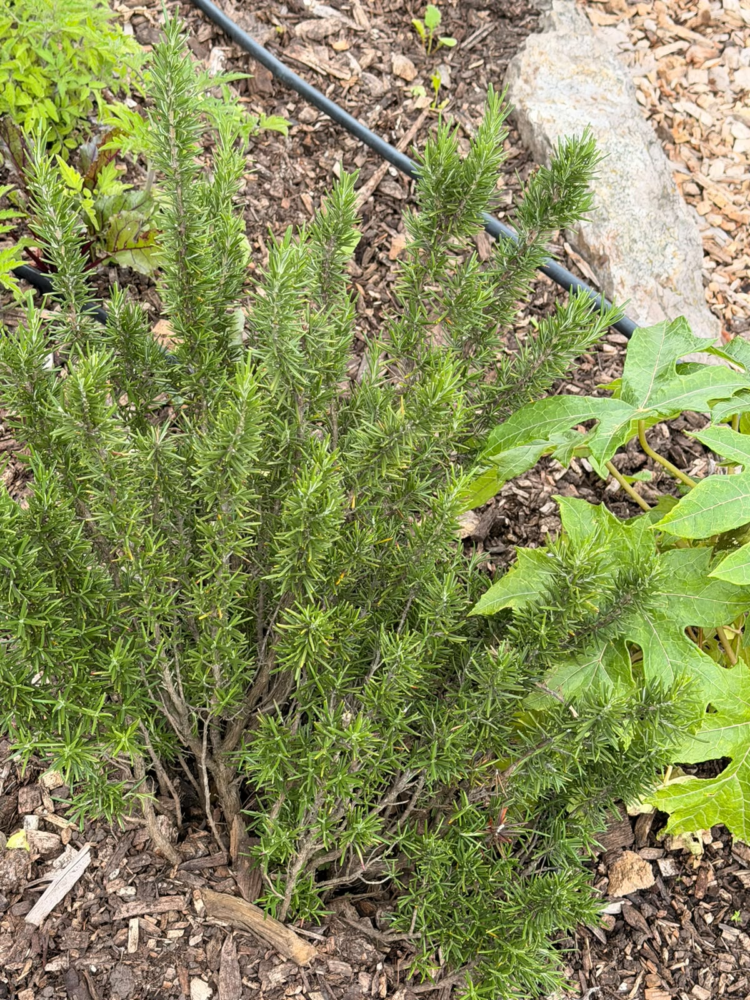
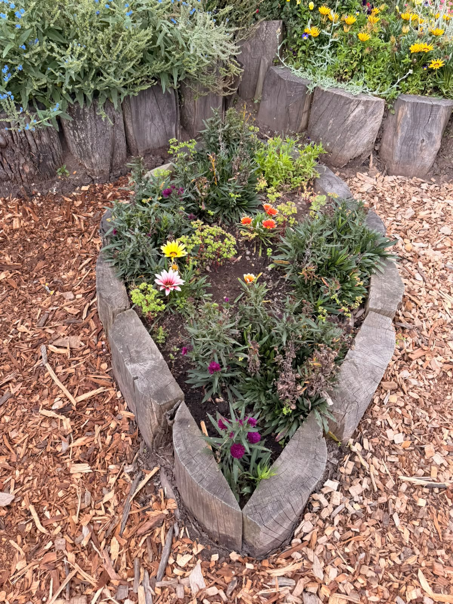

Section 2 — About the Garden
General Information
Sonia
- Location: Engativa locality, Bosque Popular
- Founded: June 2023
- Part of the 10.4 km Agroecological Route
- Promotes tourism and environmental awareness
Juan
- Founded by Maria de Jesus, a community leader
- Before: an empty, gray lot with garbage
- Transformed into a beautiful green space
10.4
KM Route
4
Gardens
2023
Founded
 Panoramic view of the garden
Panoramic view of the garden

Crop beds with stone borders
Creative rustic planter
Section 6 — Conclusion
Personal Reflection
Personal Reflection
& Conclusion
Sonia
"A beautiful example of love for the community. We do not need a big farm — we only need cooperation and a small space."
Ana Maria
"This visit changed our perspective. Urban gardens are necessary to build healthier and happier communities."
Juan
"Fases de la Luna is not just a place with plants — it is a center of education, sustainability, and friendship."
Andres
"We invite you to support local huerteros. Thank you very much for your time and attention!"
.jpeg)
Thank You
We are ready for your questions.